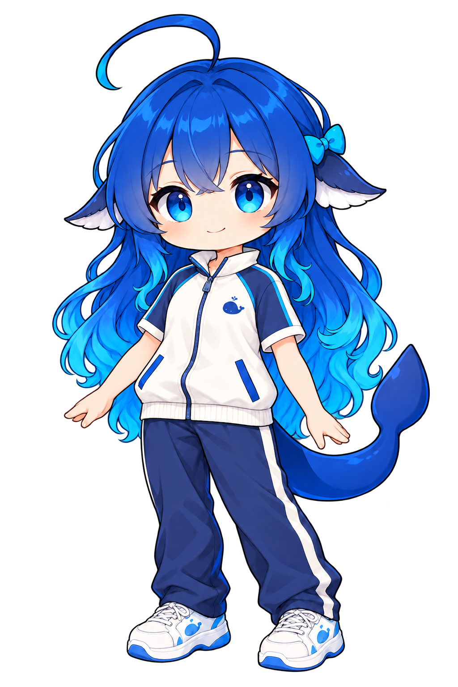
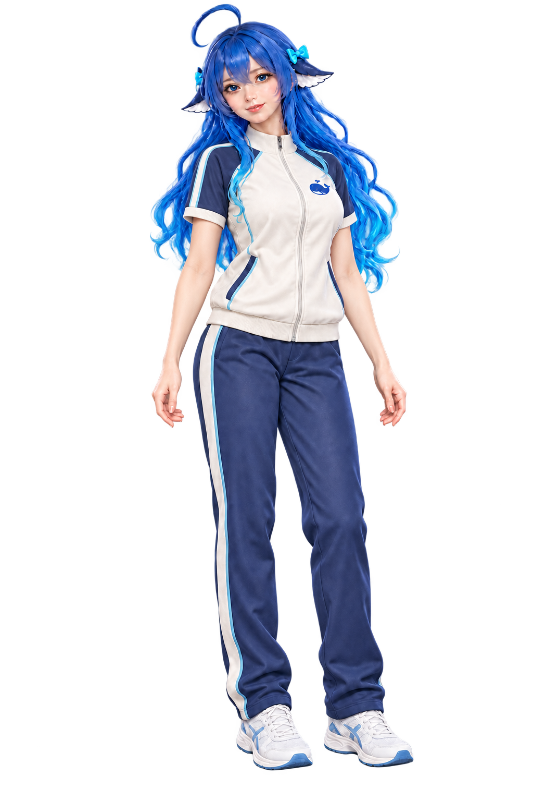

DeepSeek · Q版
短袖运动衫，圆头运动鞋，保留小鲸尾。
挑一个喜欢的质感。测试期间，所有等级都能聊天、体验全部互动。
右键只开关菜单，动作继续。试试右边的新互动。
学校运动衫 · DeepSeek 两种风格的服装样稿

短袖运动衫，圆头运动鞋，保留小鲸尾。

立领拉链短袖、柔软面料与自然褶皱。
奶白上衣 深蓝拼色 浅蓝滚边 · 同款鲸鱼标识。款式已确认并改为短袖；此处为服装样稿，尚未加入全套动作。
抬头指星星，计数跟着手势走。
举棒、送到嘴边、吹气，再收手。
抬手向上伸展，慢慢放松下来。
本轮已确认并接入 Preview 21 桌面程序，互动扩展至全部八位角色、两种风格与三套现有服装。数星星、吹泡泡与伸懒腰新增专用角色姿势，并用连续位移过渡衔接；Q版与3D真人的原装、泳装、婚纱均有对应画稿。运动衫已按确认的款式改成短袖，目前展示 DeepSeek 两版服装样稿。
配色参考 Revolut 的金属卡颜色与 N26 Metal 的低饱和金属质感。白金已按你的选择固定为浅玉金属绿。